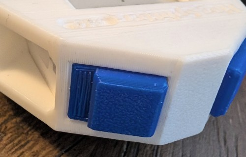
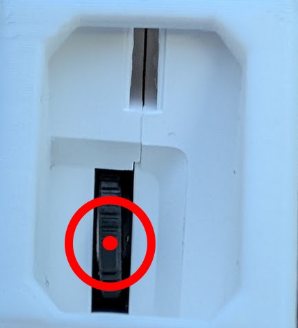
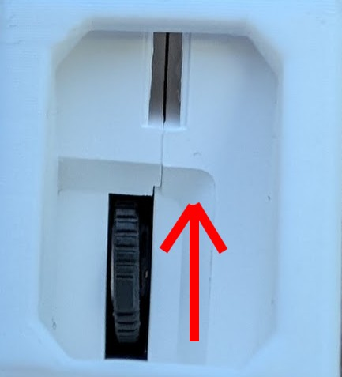
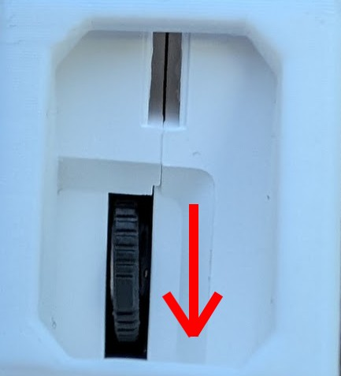
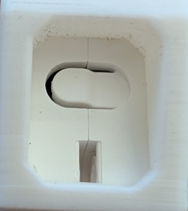
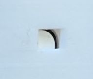
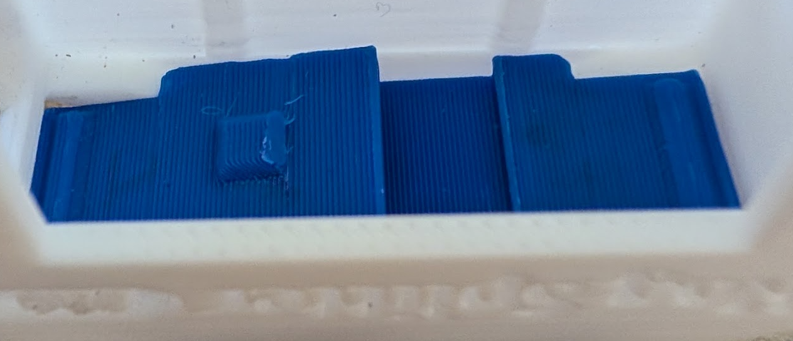

Contents
Buttons & names
Throughout this guide, controls are named as on the physical product.
| Control | Photo | Typical location / use |
|---|---|---|
| Split button |
 |
Top edge (or paired top pads). Registers a split; in settings, confirms and exits. |
| Wheel-push |
 |
Press the scroll wheel straight in. Opens settings (main screen); in settings, moves to the next page. |
| Wheel-up |
 |
Rock wheel up. In settings, increases the current value (or shows About details). |
| Wheel-down |
 |
Rock wheel down. In settings, decreases the current value (or shows About details). |
| Power button |
 |
On the side. Press to power on or to turn off from the main screen. |
| Reset button |
 |
Small recessed button; press with a pin for a full reboot (see Power on, off & reset). |
Assembly & housing
Removing the timer module from the 3D-printed housing
- Insert a sturdy string (a shoelace works well) through the holes at the bottom of the unit.
- Pry the locking tab back while pulling hard with the string, applying even force straight out of the housing.
The housing is friction-fit and can be difficult to remove.
Re-assembling the Hog Splitter Pro
-
Insert the button pieces as shown. The orientation and layering must be correct or the buttons will not work.

- Insert the timer module into the housing, taking care to use the correct orientation and without disturbing the buttons. When fully inserted, you will hear a click as the locking tab moves into place.
Power on, off & reset
Power on
Press the Power button. The e-paper display starts updating after a short moment while the Hog Splitter Pro boots.
Power off
From the main timer screen, press the Power button. The Hog Splitter Pro shows a power-off screen, then shuts down.
Power-off screen
Reset
If the Hog Splitter Pro ever misbehaves, use a pin to press the reset button. That forces a full reboot, as if power had been removed.
Taking splits & reading the display
Main readout
Each press of the Split button records a timestamp. The large digits show the elapsed time in seconds between the last two splits. Decimal places for this readout are set in Settings → Main timer precision (tenths, hundredths, or thousandths). There is no separate “reset” for the interval: the next split always defines a new interval versus the previous press.
Example main screen (medium font): large interval, two-column history (newest near top), battery at bottom right (percentage is illustrative).
Long intervals
-
Over 59 seconds between splits: the large display shows a dashed placeholder (“too long”);
the number of dashes after the dot matches your Main timer precision setting (for example
--.--for hundredths). History rules below still apply only to intervals the Hog Splitter Pro actually stores. - Over 20 seconds: the interval is not added to scrollable history (the large readout still updates until the rules above apply).
History columns (standalone)
The Hog Splitter Pro remembers up to ten intervals in history; how many rows you see depends on the Font size setting. How many decimal places appear in each history value is set separately under History precision (tenths, hundredths, or thousandths)—independent of the main timer.
- Small — 9 rows visible
- Medium — 6 rows (default)
- Large — 3 rows
- Times under 5.5 seconds go in the left column as a new row (or start a new paired row).
- Times 5.5 seconds or greater (but still ≤ 20 s for history) go in the right column. If the previous row has a left value waiting for a partner, the new time fills that row’s right cell; otherwise it starts a new row with only the right cell filled.
This lets you pair a “short” and “long” hog line time for the same shot on one history row when they are entered in that order.
Physical Split button
If your enclosure has two top pads wired to the same input, either can split; a lever-actuated placement can feel slightly different from a direct pad—press firmly if a tap does not register.
Idle & auto shutoff
Clearing the main readout after idle
If there has been no Split button activity for about one minute, the large elapsed display
clears to a dashed placeholder (history is not erased). The pattern matches Main timer precision
(for example --.-- when hundredths are selected). The next split starts fresh timing from that
press.
After idle clear: dashed main readout (example shown for hundredths); history still shows prior runs with History precision formatting.
Auto shutoff
In Settings, Auto-shutoff can be set to disabled or to 10 / 15 / 20 / 30 minutes of inactivity. Button activity resets the idle period. After this period of inactivity, the device turns itself off, the same as pressing the Power button from the main screen.
Settings
From the main timer screen (not in special boot modes):
- Press Wheel-push to open settings. The first page is Auto-shutoff.
- Wheel-push again cycles pages: Auto-shutoff → Tone volume → Tone pitch → Tone duration → Main timer precision → History precision → Font size → About → (wraps to Auto-shutoff).
- Wheel-up / Wheel-down adjust the current page’s value; on tone-related pages, changes are previewed.
- Split button saves all settings and returns to the main timer screen.
Settings layout: title, horizontal rule, current value centered below.
Setting reference
- Auto-shutoff — Disabled, 10 / 15 / 20 / 30 minutes.
- Tone volume — Off or five stepped levels (maximum drive is capped to reduce distortion).
- Tone pitch — Five preset frequencies.
- Tone duration — Five preset lengths.
- Main timer precision — Tenths, hundredths, or thousandths of a second for the large elapsed readout only (and for the dashed placeholders when idle or “too long”).
- History precision — Tenths, hundredths, or thousandths for numbers in the history columns only (independent of the main timer).
- Font size — Small (9 history rows), Medium (6), Large (3).
- About Hog Splitter Pro — Title on two lines; use Wheel-up or Wheel-down to open the detail screen with version, credit, and product URL. Wheel-push returns from the detail to the About page.
About summary: two-line title.
About detail: stacked lines; exit or navigate with the same buttons as the rest of settings.
Battery & charging
- Use a standard USB-C source; 1 A adapters are typically sufficient.
- Charge time can be on the order of a few hours from empty.
- A charging indicator may light while the battery is charging.
- Plugging in USB may power the Hog Splitter Pro even when it appears off.
Questions / comments / issues
Contact Trevor Gau.
Phone: 281-377-5337
Email: trevorsg@gmail.com